ЧИСЛА
Liczby naturalne
Натуральні числа
To podstawowe liczby, których używamy do liczenia
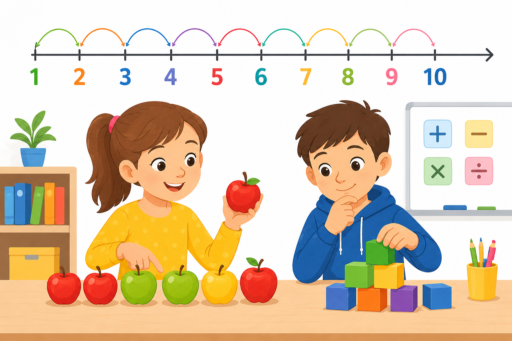
To podstawowe liczby, których używamy do liczenia
Це основні числа, які ми використовуємо для лічби
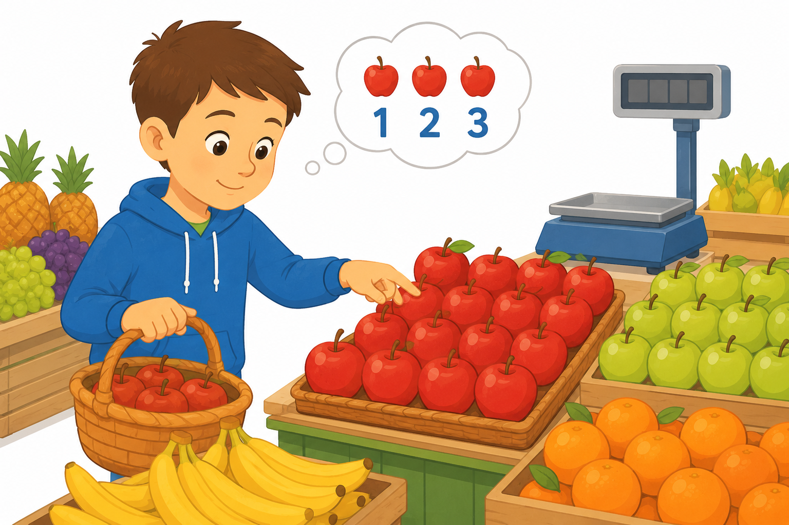
W życiu / У житті
Liczby w sklepie, na boisku, w klasie — wszędzie, gdzie coś liczysz.
Числа в магазині, на майданчику, у класі — скрізь, де щось лічиш.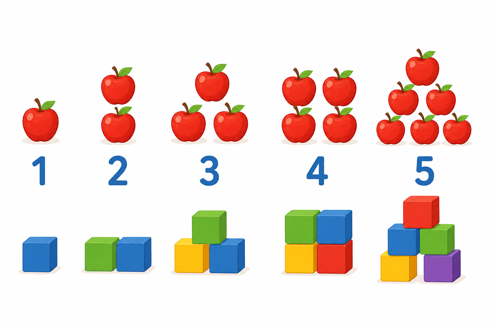
To liczby do liczenia rzeczy: 1 jabłko, 2 dzieci, 3 kroki. Zaczynamy od 1 i idziemy dalej: 1, 2, 3, 4…
Це числа для лічби речей: 1 яблуко, 2 дитини, 3 кроки. Починаємо від 1 і далі: 1, 2, 3, 4…
W klasach 1–3 liczymy nimi przedmioty. (Czasem w szkole pojawia się też 0 — zapytaj nauczyciela.)
У класах 1–3 ними лічимо предмети. (Іноді в школі є й 0 — спитай учителя.)
W koszyku leży 5 jabłek. Liczysz: 1, 2, 3, 4, 5 — to liczby naturalne.
У кошику 5 яблук. Лічиш: 1, 2, 3, 4, 5 — це натуральні числа.
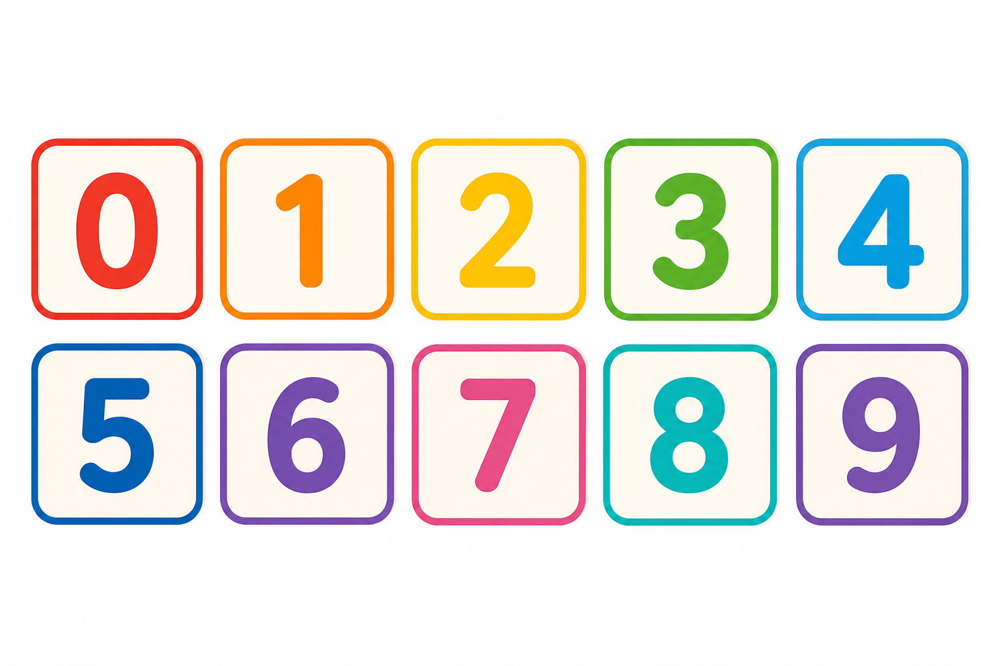
Cyfra to „klocek” do budowania liczb. Jest ich tylko dziesięć: 0, 1, 2, 3, 4, 5, 6, 7, 8, 9.
Цифра — «цеглинка» для чисел. Їх лише десять: 0, 1, 2, 3, 4, 5, 6, 7, 8, 9.
3 to cyfra i mała liczba. 35 to już liczba z dwóch cyfr. Cyfra ≠ liczba!
3 — цифра і мале число. 35 — число з двох цифр. Цифра ≠ число!
Na kostce do gry widzisz tylko cyfry 1–6. Z cyfr składasz potem większe liczby.
На гральному кубику бачиш лише цифри 1–6. З цифр потім складаєш більші числа.
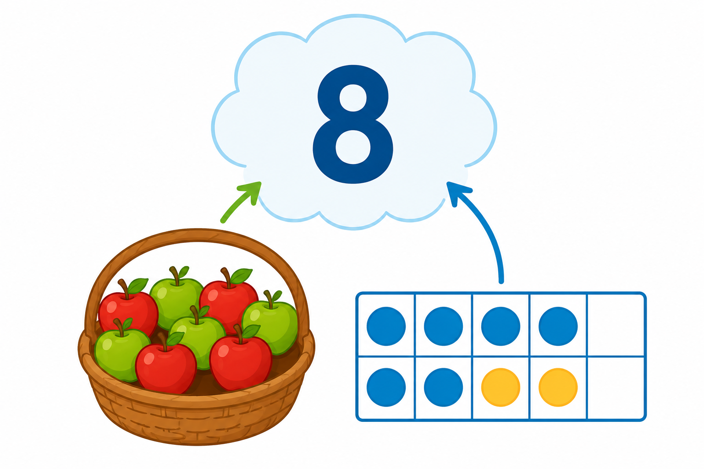
Liczba mówi, ile czegoś jest. Może być krótka (7) albo długa (347).
Число каже, скільки чогось є. Може бути коротким (7) або довгим (347).
Czytamy od lewej: najpierw większe „paczki” (setki), potem dziesiątki, na końcu jednostki.
Читаємо зліва: спочатку більші «пакунки» (сотні), потім десятки, в кінці одиниці.
Numer domu 347 to liczba z trzech cyfr — mówi, który to dom.
Номер будинку 347 — число з трьох цифр — каже, який це будинок.
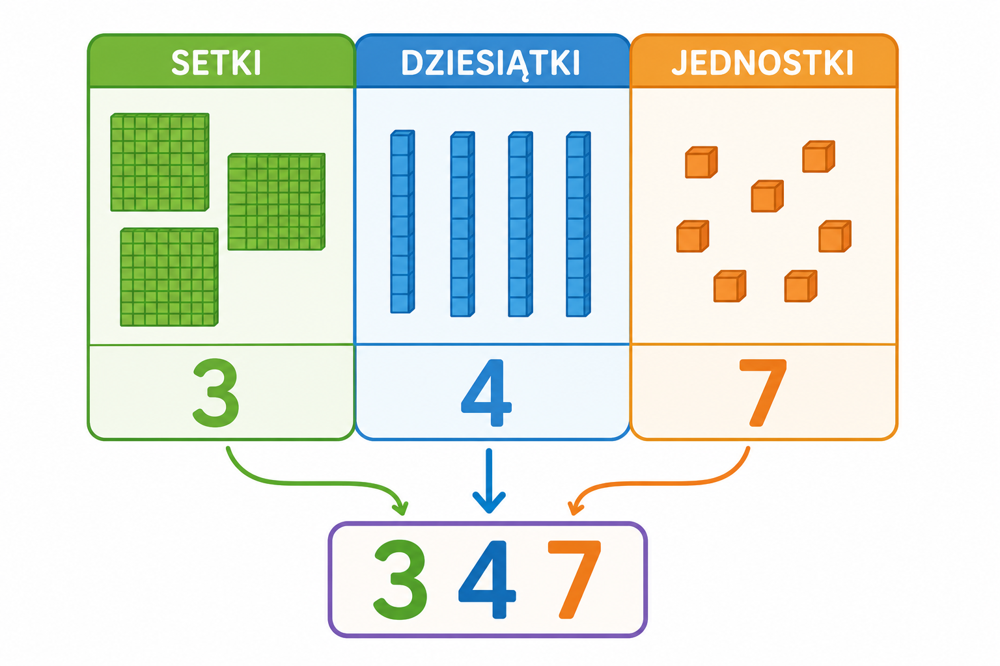
To samo „3” znaczy co innego zależnie od miejsca: w 347 to 3 setki, a nie 3 jednostki. Jak klocki: paczka dziesiątek i osobne jedności.
Те саме «3» означає різне залежно від місця: у 347 це 3 сотні, а не 3 одиниці. Як кубики: пачка десятків і окремі одиниці.
Na palcach lub klockach: 23 = 2 dziesiątki + 3 jedności. Im bardziej w lewo, tym „mocniejsze” miejsce.
На пальцях або кубиках: 23 = 2 десятки + 3 одиниці. Що лівіше — то «сильніше» місце.
W numerze 347 cyfra 3 to setki (300), a nie „po prostu trzy”.
У номері 347 цифра 3 — сотні (300), а не «просто три».
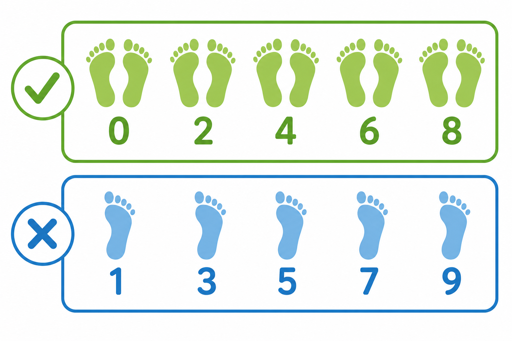
Liczba porządkowa mówi o kolejności: pierwszy, drugi, trzeci… — nie „ile”, tylko „który z kolei”.
Порядкове число каже про порядок: перший, другий, третій… — не «скільки», а «який за порядком».
W wyścigu: kto dobiegł pierwszy? To liczba porządkowa. Ile dzieci biegło? To liczba naturalna.
На перегонах: хто прибіг перший? Це порядкове. Скільки дітей бігло? Це натуральне.
Liczenie rzeczy wokół Ciebie. Przykład: 1. pierwszy · 2. drugi · 3. trzeci.
Лічба речей навколо тебе. Приклад: 1. pierwszy · 2. drugi · 3. trzeci.
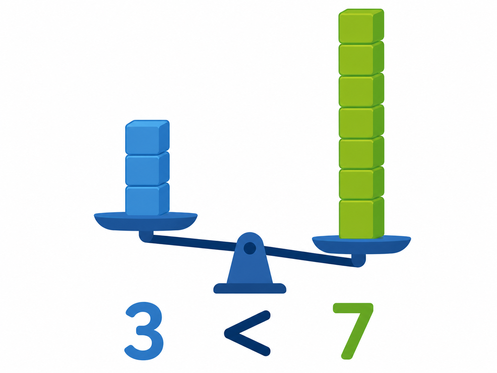
Zero = nic / pusto (0 cukierków). W kl. 1–3 bywa różnie, czy 0 należy do liczb naturalnych — w szkole pytaj nauczyciela.
Нуль = нічого / порожньо (0 цукерок). У кл. 1–3 буває по-різному, чи 0 у натуральних — у школі спитай учителя.
0 to cyfra i specjalna liczba. Nie dziel przez zero!
0 — цифра і особливе число. Не діли на нуль!
Liczenie rzeczy wokół Ciebie. Przykład: 0.
Лічба речей навколо тебе. Приклад: 0.
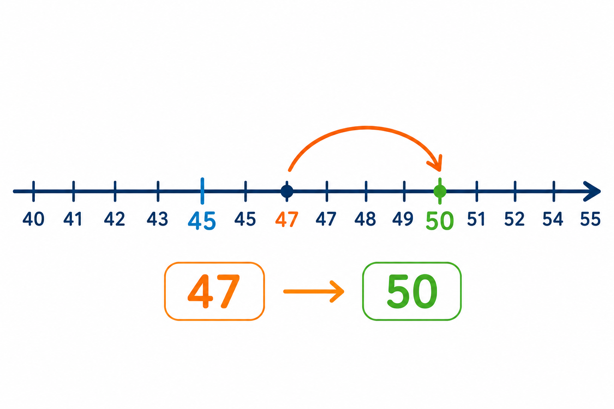
Parzysta dzieli się równo na 2 (jak pary skarpetek). Nieparzysta — zostaje 1 „bez pary”.
Парне ділиться порівну на 2 (як пари шкарпеток). Непарне — лишається 1 «без пари».
Patrz tylko na ostatnią cyfrę: 0,2,4,6,8 → parzysta; 1,3,5,7,9 → nieparzysta.
Дивись лише на останню цифру: 0,2,4,6,8 → парне; 1,3,5,7,9 → непарне.
Dzieci ustawiają się parami. Liczba parzysta → wszyscy mają parę; nieparzysta → ktoś zostaje.
Діти стають парами. Парне число → всі мають пару; непарне → хтось лишається.
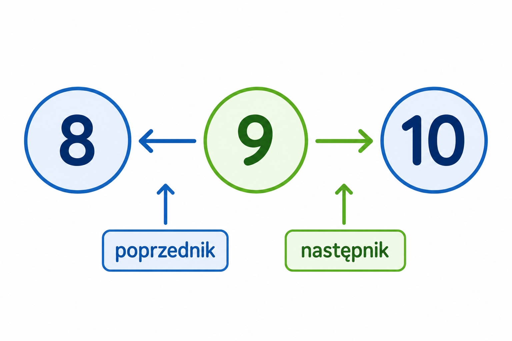
Porównanie mówi, która liczba jest mniejsza, równa albo większa.
Порівняння каже, яке число менше, рівне або більше.
Znak < i > ma otwartą stronę w kierunku większej liczby: 3 < 7, 9 > 2.
Знак < і > має відкритий бік до більшого числа: 3 < 7, 9 > 2.
Ty masz 3 naklejki, kolega 7. Piszesz 3 < 7 — u niego więcej.
У тебе 3 наліпки, у друга 7. Пишеш 3 < 7 — у нього більше.

Zaokrąglanie to zamiana liczby na bliską, wygodną (np. łatwiej myśleć o 50 niż o 47).
Округлення — заміна числа на близьке, зручне (напр. легше думати про 50, ніж про 47).
Patrz na następną cyfrę: 0–4 → w dół; 5–9 → w górę. Przykład: 47 → 50.
Дивись на наступну цифру: 0–4 → вниз; 5–9 → вгору. Приклад: 47 → 50.
W sklepie jest 47 cukierków. Mówisz w przybliżeniu: „ze 50” — łatwiej planować.
У магазині 47 цукерок. Кажеш приблизно: «з 50» — легше планувати.

Poprzednik to liczba o 1 mniejsza. Następnik to liczba o 1 większa.
Попередник — число на 1 менше. Наступник — число на 1 більше.
Na osi liczbowej: sąsiad z lewej (poprzednik) i z prawej (następnik). Dla 9: 8 i 10.
На числовій прямій: сусід зліва (попередник) і справа (наступник). Для 9: 8 і 10.
Stoisz na stopniu 9. Stopień niżej to 8 (poprzednik), wyżej — 10 (następnik).
Стоїш на сходинці 9. Нижче — 8 (попередник), вище — 10 (наступник).
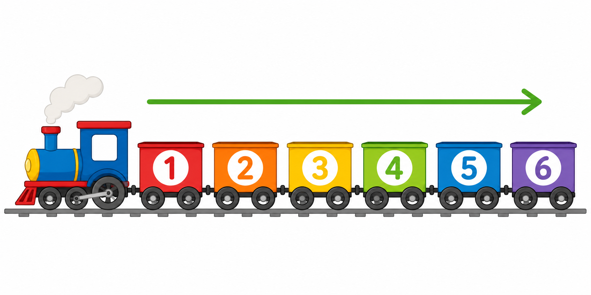
Kolejność to układanie liczb od najmniejszej do największej (albo odwrotnie).
Порядок — розкладання чисел від найменшого до найбільшого (або навпаки).
Porównuj po kolei albo ustaw liczby na osi — od razu widać porządek.
Порівнюй по черзі або постав числа на пряму — одразу видно порядок.
Układacie wyniki biegu od najmniejszego czasu do największego — to kolejność.
Розкладаєте результати бігу від найменшого часу до найбільшого — це порядок.
Cyfra to nie to samo co liczba: 3 to cyfra; 35 to liczba z dwóch cyfr. Zero = pusto — o naturalnych pytaj nauczyciela.
Цифра — не те саме, що число: 3 — цифра; 35 — число з двох цифр. Нуль = порожньо — про натуральні питай учителя.
Ćwiczenie · Wordwall Вправа
Sprawdź hasła z tej strony w krótkim quizie.
Перевір поняття з цієї сторінки в короткому квізі.
To reguły matematyczne — ucz się ich jak tabliczki mnożenia. / Це математичні правила — вчи їх як таблицю множення.


![() [] √ ² % π ∠ ∥](assets/images/img42_8.png)